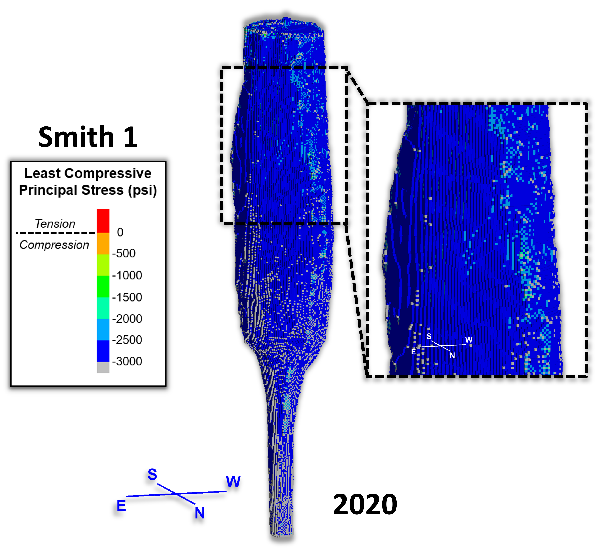

| Name | Description | Inputs | Returns | Example |
|---|---|---|---|---|
| groupskin | Create a new group for the zones on the boundary between the two groups ('group' 'slot') and ('adjgroup' 'adjslot') and names it ('newgroup' 'newslot'). Good for MIT skin plots. |
groupskin(group,slot,adjgroup,adjslot,newgroup,newslot)
group: name of group of zones in which you want newgroup and newslot to be assigned to slot: name of slot of zones in which you want newgroup and newslot to be assigned to adjgroup: name of group of zones adjacent to group and slot zones adjslot: name of slot of zones adjacent to group and slot zones newgroup: name of group that will be assigned to the zones on the skin of adjgroup and adjslot zones newslot: name of slot that will be assigned to the zones on the skin of adjgroup and adjslot zones |
N/A | [groupskin('Salt','Materials','Smith1','2008','Smith1skin','Skin')]
 |
| Alfreds Futterkiste | Germany | Germany | ||
| Berglunds snabbkop | Sweden | Sweden | ||
| Island Trading | UK | UK | ||
| Koniglich Essen | Germany | Germany | ||
| Laughing Bacchus Winecellars | Canada | Canada | ||
| Magazzini Alimentari Riuniti | Italy | Italy | ||
| North/South | UK | UK | ||
| Paris specialites | France | France |